Retatrutide - Laboratory Research Reagent (10 mg)
$95 CAD
Supplied as lyophilized material for non-clinical laboratory research.
Pure Research Peptide Lab supplies research-use-only materials. Products are not for human consumption or human use.
Are you over 21 years of age?
21+ · Research use only · Not for human use
Catalog for qualified research customers. Product names, quantities, and pricing are catalog information only. No dosing, protocols, human-use guidance, or wellness claims are provided.
Catalog
Each product includes a COA path, product breakdown, quantity selector, and inquiry-cart action. COA buttons are ready for final lab reports once the batch documents are uploaded.
$95 CAD
Supplied as lyophilized material for non-clinical laboratory research.
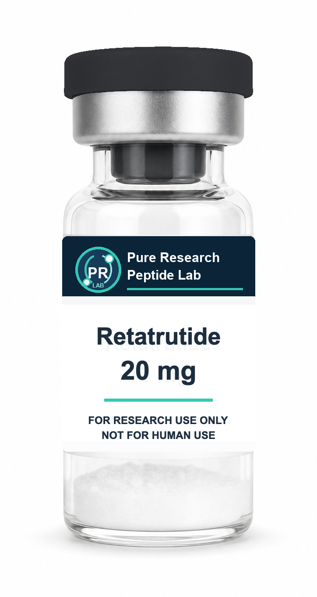
$120 CAD
Supplied as lyophilized material for non-clinical laboratory research.
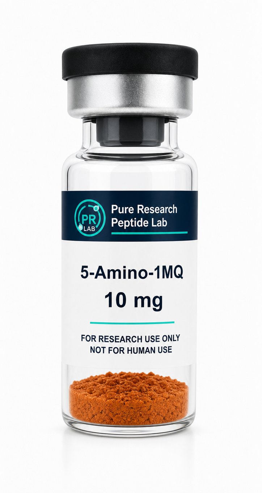
$60 CAD
Supplied as lyophilized material for non-clinical laboratory research.
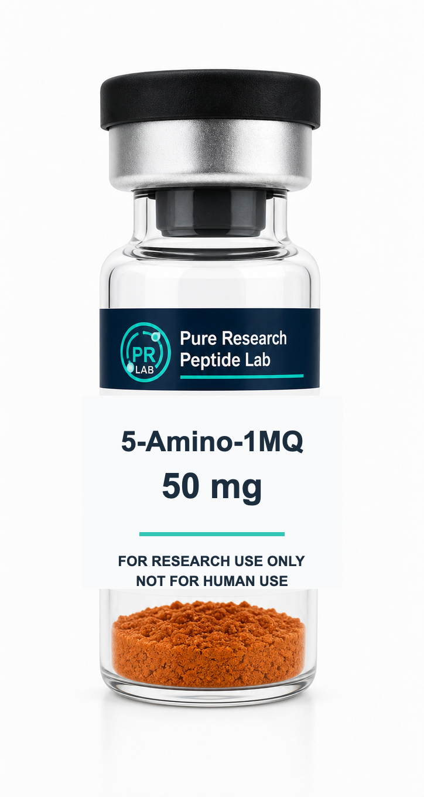
$175 CAD
Supplied as lyophilized material for non-clinical laboratory research.
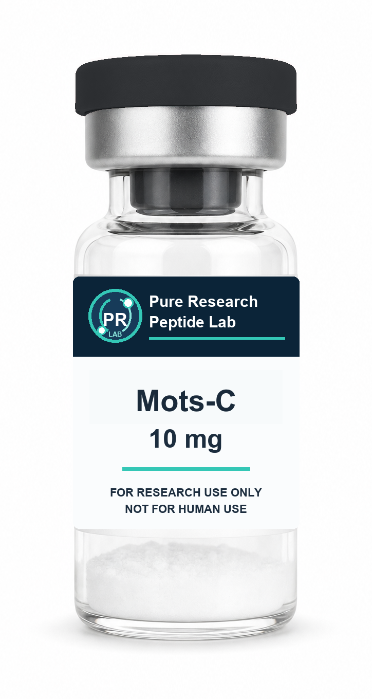
$60 CAD
Supplied as lyophilized material for non-clinical laboratory research.
$175 CAD
Supplied as lyophilized material for non-clinical laboratory research.
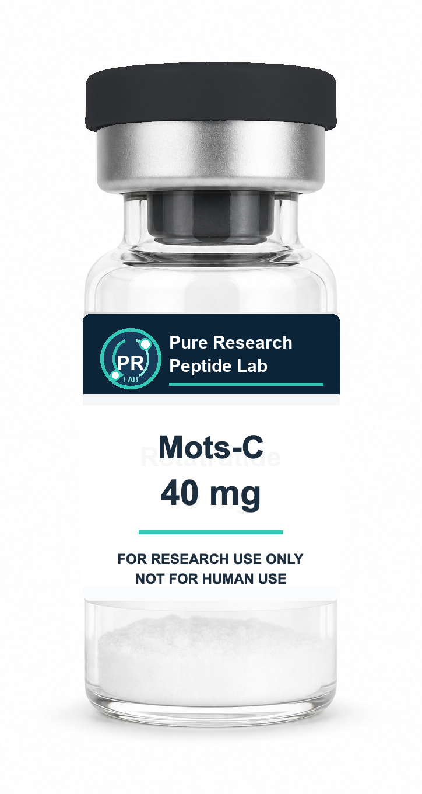
$200 CAD
Supplied as lyophilized material for non-clinical laboratory research.
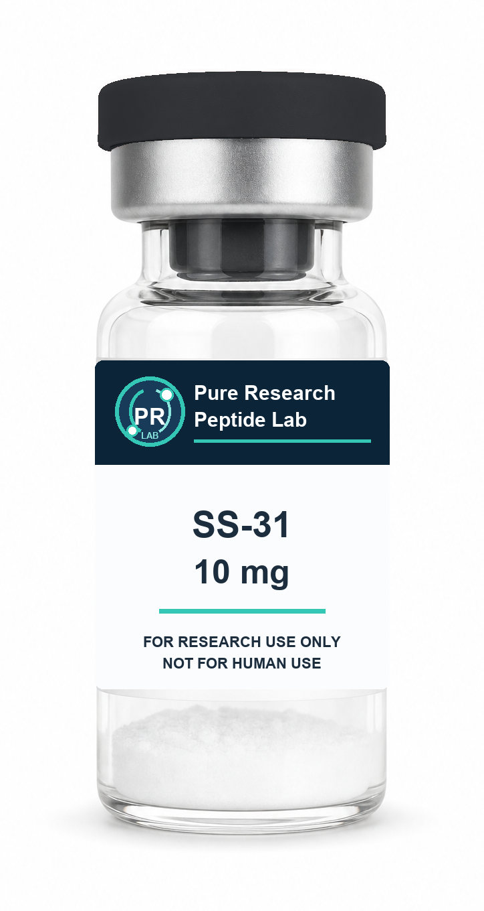
$70 CAD
Supplied as lyophilized material for non-clinical laboratory research.
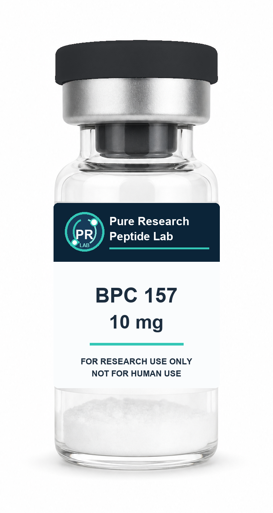
$65 CAD
Supplied as lyophilized material for non-clinical laboratory research.
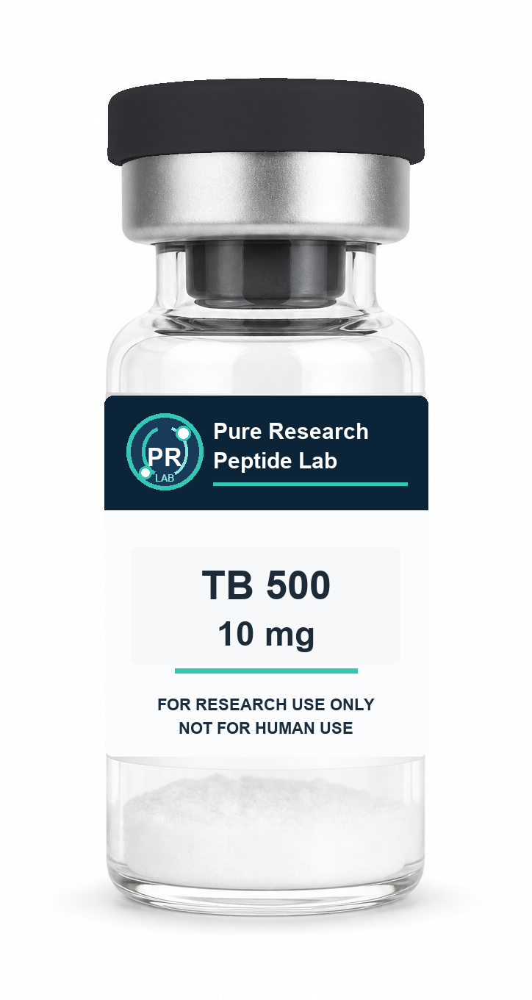
$65 CAD
Supplied as lyophilized material for non-clinical laboratory research.
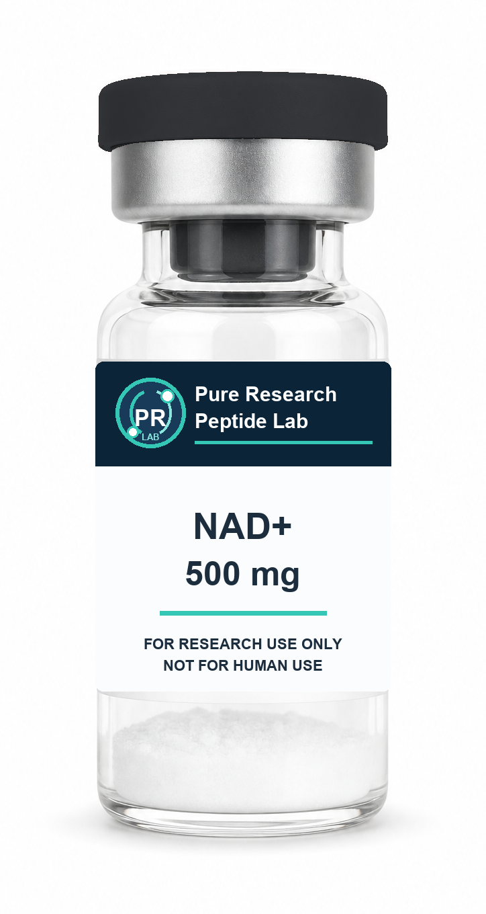
$70 CAD
Supplied as lyophilized material for non-clinical laboratory research.
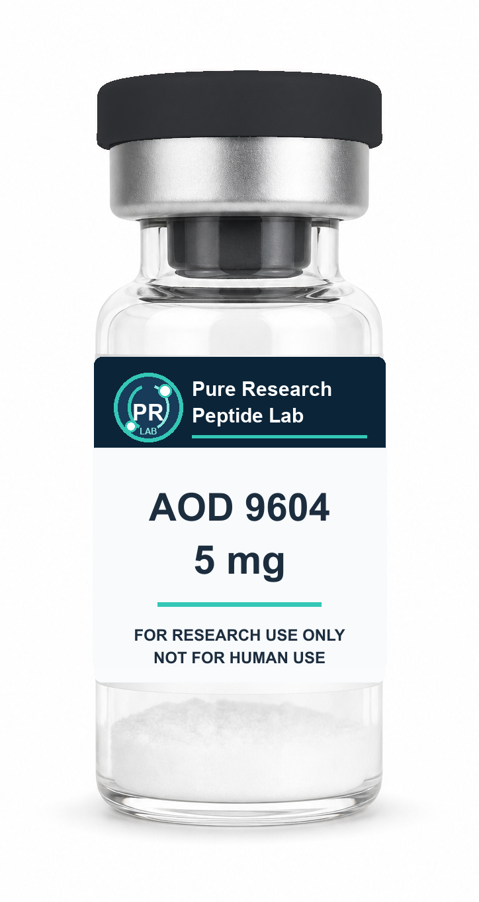
$70 CAD
Supplied as lyophilized material for non-clinical laboratory research.
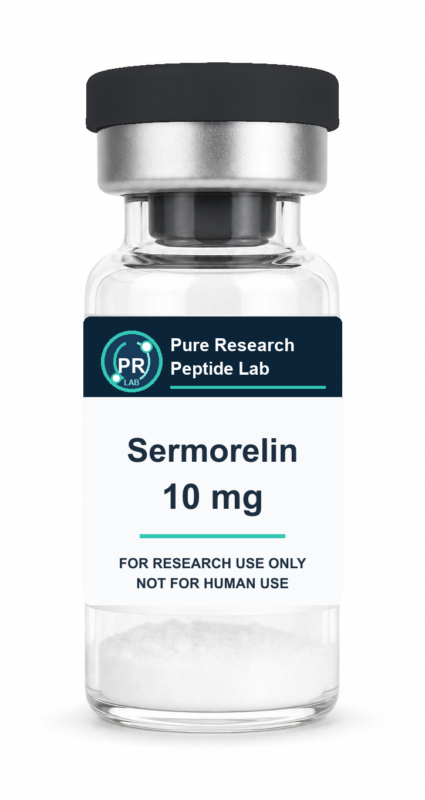
$65 CAD
Supplied as lyophilized material for non-clinical laboratory research.
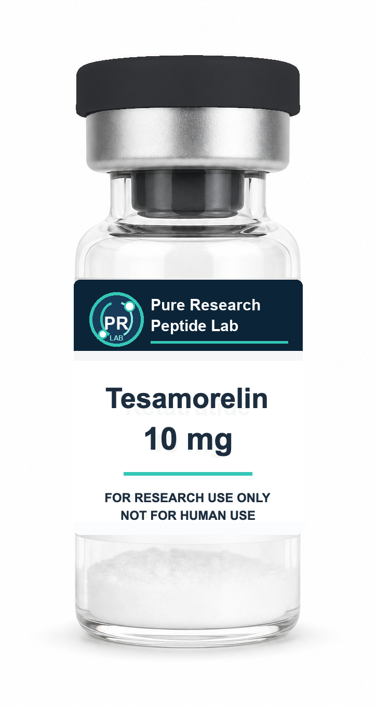
$100 CAD
Supplied as lyophilized material for non-clinical laboratory research.
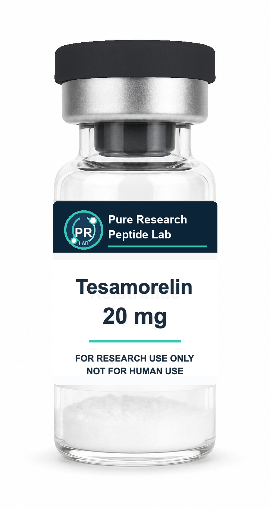
$200 CAD
Supplied as lyophilized material for non-clinical laboratory research.
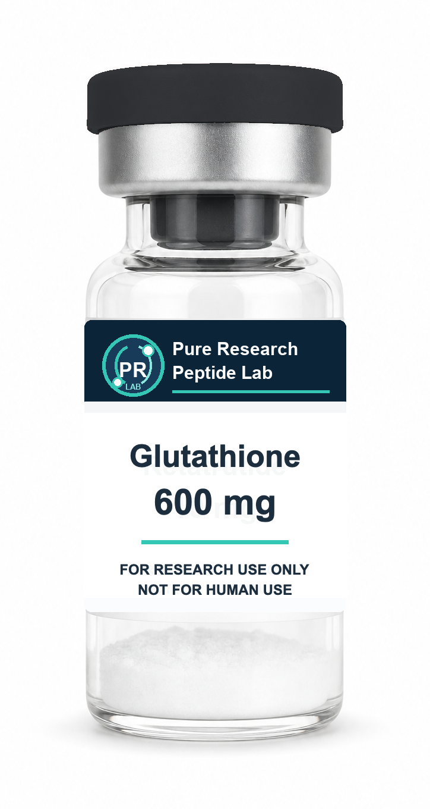
$80 CAD
Supplied as lyophilized material for non-clinical laboratory research.
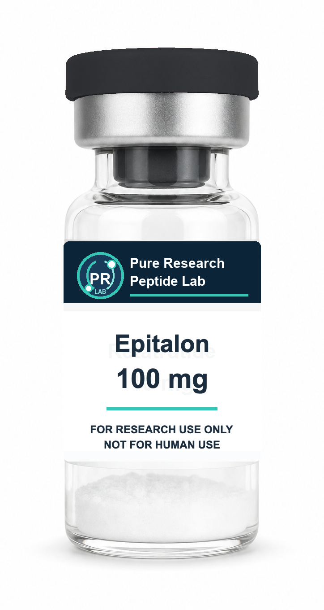
$110 CAD
Supplied as lyophilized material for non-clinical laboratory research.
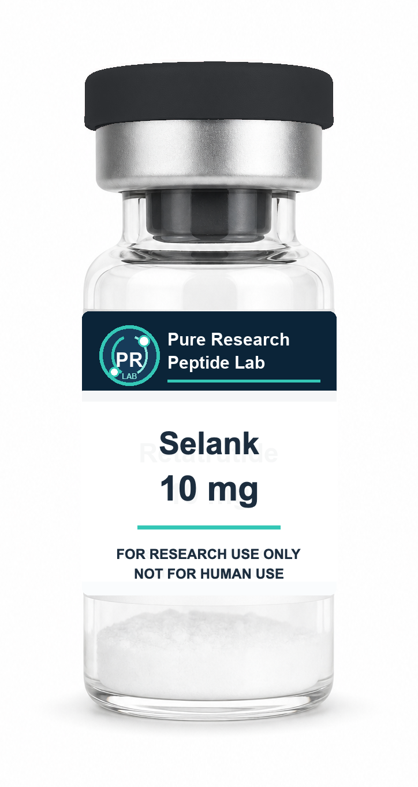
$50 CAD
Supplied as lyophilized material for non-clinical laboratory research.
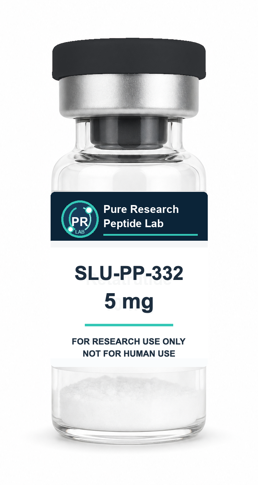
$75 CAD
Supplied as lyophilized material for non-clinical laboratory research.
$60 CAD
Supplied as lyophilized material for non-clinical laboratory research.
$60 CAD
Supplied as lyophilized material for non-clinical laboratory research.
Certificate of Analysis
These buttons currently open product-specific COA placeholders. When the lab sends the real reports, the files can be replaced with the actual COAs without changing the shopping flow.
Product breakdown
Retatrutide 10 mg
Retatrutide is supplied as 10 mg lyophilized material in a 3 mL glass vial for non-clinical laboratory research.
Retatrutide 20 mg
Retatrutide is supplied as 20 mg lyophilized material in a 3 mL glass vial for non-clinical laboratory research.
5-Amino-1MQ 10 mg
5-Amino-1MQ is supplied as 10 mg lyophilized material in a 3 mL glass vial for non-clinical laboratory research.
5-Amino-1MQ 50 mg
5-Amino-1MQ is supplied as 50 mg lyophilized material in a 3 mL glass vial for non-clinical laboratory research.
Mots-C 10 mg
Mots-C is supplied as 10 mg lyophilized material in a 3 mL glass vial for non-clinical laboratory research.
Mots-C 30 mg
Mots-C is supplied as 30 mg lyophilized material in a 3 mL glass vial for non-clinical laboratory research.
Mots-C 40 mg
Mots-C is supplied as 40 mg lyophilized material in a 3 mL glass vial for non-clinical laboratory research.
SS-31 10 mg
SS-31 is supplied as 10 mg lyophilized material in a 3 mL glass vial for non-clinical laboratory research.
BPC 157 10 mg
BPC 157 is supplied as 10 mg lyophilized material in a 3 mL glass vial for non-clinical laboratory research.
TB 500 10 mg
TB 500 is supplied as 10 mg lyophilized material in a 3 mL glass vial for non-clinical laboratory research.
NAD+ 500 mg
NAD+ is supplied as 500 mg lyophilized material in a larger 10 mL glass vial for non-clinical laboratory research.
AOD 9604 5 mg
AOD 9604 is supplied as 5 mg lyophilized material in a 3 mL glass vial for non-clinical laboratory research.
Sermorelin 10 mg
Sermorelin is supplied as 10 mg lyophilized material in a 3 mL glass vial for non-clinical laboratory research.
Tesamorelin 10 mg
Tesamorelin is supplied as 10 mg lyophilized material in a 3 mL glass vial for non-clinical laboratory research.
Tesamorelin 20 mg
Tesamorelin is supplied as 20 mg lyophilized material in a 3 mL glass vial for non-clinical laboratory research.
Glutathione 600 mg
Glutathione is supplied as 600 mg lyophilized material in a 3 mL glass vial for non-clinical laboratory research.
Epitalon 100 mg
Epitalon is supplied as 100 mg lyophilized material in a 3 mL glass vial for non-clinical laboratory research.
Selank 10 mg
Selank is supplied as 10 mg lyophilized material in a 3 mL glass vial for non-clinical laboratory research.
SLU-PP-332 5 mg
SLU-PP-332 is supplied as 5 mg lyophilized material in a 3 mL glass vial for non-clinical laboratory research.
Pinealon 10 mg
Pinealon is supplied as 10 mg lyophilized material in a 3 mL glass vial for non-clinical laboratory research.
PT-141 10 mg
PT-141 is supplied as 10 mg lyophilized material in a 3 mL glass vial for non-clinical laboratory research.
Compliance posture
Controlled inquiry
For research-only product questions, documentation, or order support, email info@pureresearchpeptidelab.com.
Customer feedback
Reviews are checked before publication. Eligible approved reviews can receive a coupon code by email for a future order inquiry.